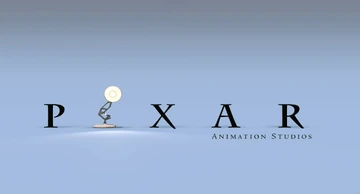

a teoria da pixar
se você já pesquisou algo sobre a pixar na internet, provavelmente já viu posts falando sobre a teoria da pixar. Uma suposta linha do tempo que consegue encaixar todas as produções na mesma história do mundo. A maioria dos membros da pixar diz que são apenas rumores, mas "cara de um, focinho de outro"provou que teorias pode se tornar reais. Não vou contar os spoilers do filme, mais ele mostra 6 filmes que comprovam que é verdade a teoria a teoria pixar existe desde 2013, e funcionava de uma forma cronologica,do passado até o futuro